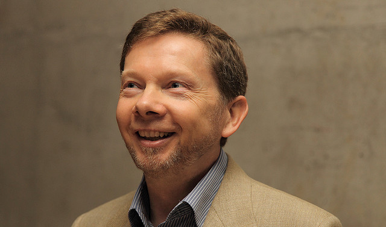

“La mente es un instrumento soberbio si se usa correctamente. Sin embargo, si se usa de forma inapropiada, se vuelve muy destructiva. Para decirlo con más precisión, no se trata tanto de que usas la mente equivocadamente: por lo general no la usas en absoluto, sino que ella te usa a ti. Ésa es la enfermedad. Crees que tú eres tu mente. Ese es el engaño. El instrumento se ha apoderado de ti. Es como si estuvieras poseído sin saberlo, y crees que la entidad posesora (el pensador) eres tú.
La Libertad comienza cuando te das cuenta de que no eres la entidad posesora, el pensador. Saberlo te permite examinar la entidad. En el momento en que empiezas a observar al pensador, se activa un nivel de conciencia superior. Entonces empiezas a darte cuenta de que hay un vasto reino de inteligencia más allá del pensamiento, y de que el pensamiento sólo es una pequeña parte de esa inteligencia.
También te das cuenta de que todas las cosas verdaderamente importantes: la belleza, el amor, la creatividad, la alegría, la paz interna, surgen de más allá de la mente. Empiezas a despertar.
Eckhart Tolle

No Dejes que el FUTURO Controle tu Mente | Eckhart Tolle